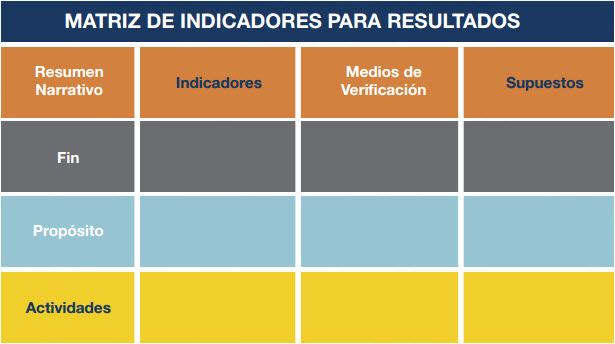
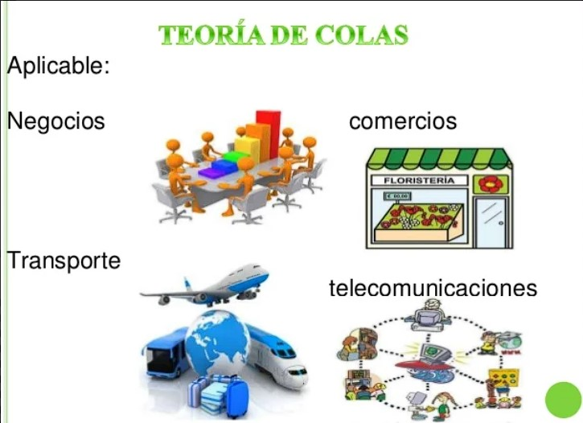
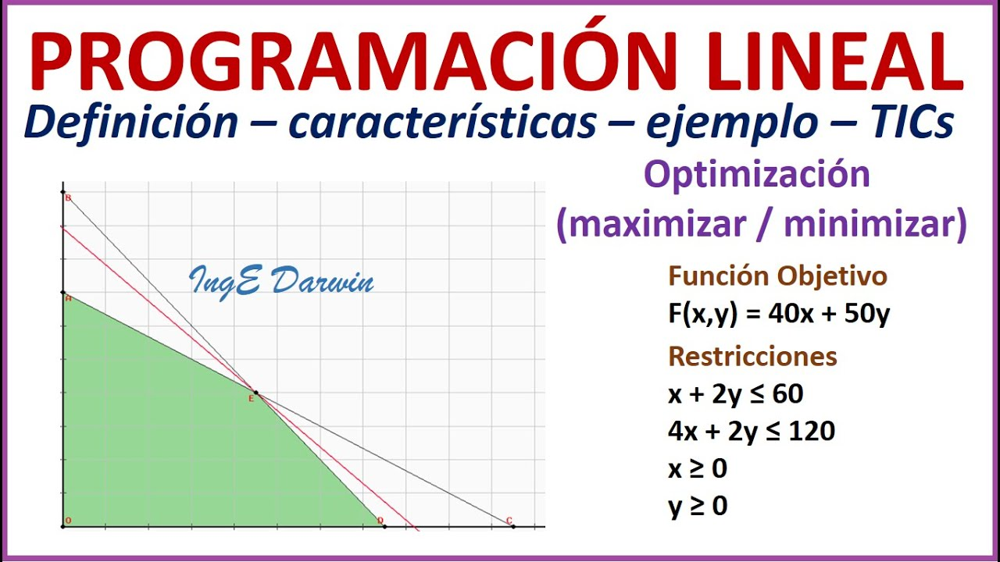

METODOS CUALITATIVOS Y CUANTITATIVOS UTILIZADOS EN LA PROGRAMACION PARA LA TOMA DE DECISIONES
Objetivo
El objetivo de este análisis es explorar y comprender los métodos cualitativos y cuantitativos utilizados en la programación para la toma de decisiones. Se busca identificar cómo estas técnicas pueden complementar y potenciar la capacidad de los profesionales para abordar problemas complejos, optimizar recursos y generar soluciones innovadoras. Además, se pretende destacar la importancia de integrar ambos enfoques para mejorar la precisión, la eficiencia y la creatividad en el proceso de toma de decisiones.Introducción
En el mundo actual, la toma de decisiones en la programación y en diversas áreas de negocio requiere un enfoque multifacético que combine tanto métodos cualitativos como cuantitativos. Los métodos cuantitativos, que incluyen técnicas matemáticas y estadísticas como el análisis de regresión, la optimización, la simulación y las redes neuronales, proporcionan un marco riguroso y basado en datos para resolver problemas y predecir resultados. Estas herramientas permiten a los profesionales analizar grandes volúmenes de datos, identificar patrones y tomar decisiones informadas con un alto grado de precisión. Por otro lado, los métodos cualitativos, que comprenden técnicas como entrevistas, grupos focales, y análisis de contenido, ofrecen una comprensión más profunda y contextual de los problemas. Estos métodos permiten captar la complejidad de las experiencias humanas, las percepciones y los factores intangibles que influyen en la toma de decisiones. La combinación de estos enfoques cualitativos y cuantitativos en la programación proporciona una visión más completa y equilibrada, permitiendo a los tomadores de decisiones no solo basarse en datos objetivos, sino también considerar aspectos subjetivos y contextuales. Este análisis pretende explorar cómo la integración de métodos cualitativos y cuantitativos puede enriquecer el proceso de toma de decisiones, ofreciendo un enfoque holístico que mejora la precisión, la eficiencia y la creatividad. Al comprender y aplicar estos métodos de manera complementaria, los profesionales pueden desarrollar estrategias más robustas y adaptativas, capaces de enfrentar los desafíos complejos y dinámicos del entorno actual.En el mundo actual, la toma de decisiones en la programación y en diversas áreas de negocio requiere un enfoque multifacético que combine tanto métodos cualitativos como cuantitativos. Los métodos cuantitativos, que incluyen técnicas matemáticas y estadísticas como el análisis de regresión, la optimización, la simulación y las redes neuronales, proporcionan un marco riguroso y basado en datos para resolver problemas y predecir resultados. Estas herramientas permiten a los profesionales analizar grandes volúmenes de datos, identificar patrones y tomar decisiones informadas con un alto grado de precisión. Por otro lado, los métodos cualitativos, que comprenden técnicas como entrevistas, grupos focales, y análisis de contenido, ofrecen una comprensión más profunda y contextual de los problemas. Estos métodos permiten captar la complejidad de las experiencias humanas, las percepciones y los factores intangibles que influyen en la toma de decisiones. La combinación de estos enfoques cualitativos y cuantitativos en la programación proporciona una visión más completa y equilibrada, permitiendo a los tomadores de decisiones no solo basarse en datos objetivos, sino también considerar aspectos subjetivos y contextuales. Este análisis pretende explorar cómo la integración de métodos cualitativos y cuantitativos puede enriquecer el proceso de toma de decisiones, ofreciendo un enfoque holístico que mejora la precisión, la eficiencia y la creatividad. Al comprender y aplicar estos métodos de manera complementaria, los profesionales pueden desarrollar estrategias más robustas y adaptativas, capaces de enfrentar los desafíos complejos y dinámicos del entorno actual.
Desarrollo
Cualitativas (Personales) - Intangibles
Experiencia:
La experiencia personal y profesional juega un papel crucial en la toma de decisiones. A través de la experiencia, los individuos desarrollan un conocimiento profundo y práctico que les permite manejar situaciones complejas y tomar decisiones informadas basadas en aprendizajes pasados.
Buen Juicio e Intuición:
El buen juicio y la intuición son habilidades intangibles que se desarrollan con el tiempo y la práctica. Estas capacidades permiten a los tomadores de decisiones evaluar situaciones rápidamente y tomar decisiones acertadas basadas en un sentido instintivo de lo que es correcto o beneficioso.
Hechos:
Los hechos son datos cualitativos que se obtienen a través de observaciones directas y experiencias. Los hechos proporcionan una base sólida para la toma de decisiones al ofrecer información concreta y verificable sobre la situación en cuestión.
Creatividad:
La creatividad es fundamental para la generación de nuevas ideas y soluciones innovadoras. En la toma de decisiones, la creatividad permite a los individuos pensar fuera de los límites convencionales y explorar enfoques originales y efectivos para resolver problemas.
Cuantitativas
Teoría de Redes:

Utilizada para analizar y optimizar redes de comunicación, transporte y otros sistemas interconectados, ayudando a identificar los puntos críticos y mejorar la eficiencia general del sistema.
Árboles de Decisión:

Una herramienta visual que ayuda a mapear y evaluar las posibles decisiones y sus consecuencias. Permite a los tomadores de decisiones analizar diferentes escenarios y elegir la opción que maximiza los beneficios o minimiza los riesgos.
Matriz de Resultados:
Una representación tabular de las posibles decisiones y sus respectivos resultados. Ayuda a comparar y evaluar las diferentes opciones en función de sus posibles resultados y probabilidades.
Teoría de Colas:
Utilizada para analizar y optimizar sistemas de espera, como líneas de servicio y procesamiento de tareas, mejorando la eficiencia y reduciendo los tiempos de espera.
Sistema de Inventarios:

Métodos y modelos para gestionar y optimizar el inventario de una organización, asegurando que los niveles de stock sean adecuados para satisfacer la demanda sin incurrir en costos excesivos.
Programación Lineal:
Una técnica matemática para encontrar la mejor solución en problemas de optimización que involucran restricciones lineales. Es ampliamente utilizada en la planificación de recursos y la asignación de tareas.
Programación Entera:

Una extensión de la programación lineal donde las variables de decisión son enteras. Es útil en problemas donde las decisiones deben ser discretas, como en la asignación de recursos y la planificación de proyectos.
Simulación:
Una técnica para modelar y analizar el comportamiento de sistemas complejos mediante la creación de modelos virtuales. Permite experimentar con diferentes escenarios y evaluar los posibles resultados sin riesgos reales.
Análisis de Markov:

Un método para modelar sistemas estocásticos donde las transiciones entre estados dependen solo del estado actual. Es útil en la evaluación de procesos de negocio y el análisis de comportamiento a largo plazo.
Apoyo didactico
Aqui se muestran algunos recursos de apoyo para el fortalecimiento del aprendizaje
Conclusión
En conclusión, las consideraciones para la toma de decisiones son múltiples y variadas. Desde la identificación del problema hasta la implementación de la decisión, cada etapa requiere un análisis cuidadoso y una evaluación de las posibles consecuencias. Al desarrollar habilidades sólidas en la toma de decisiones, podemos aumentar nuestras posibilidades de éxito tanto en la vida personal como profesional.
Actividad Practica
Preguntas de reflexion
¿Cómo ha influido mi experiencia personal y profesional en mis decisiones recientes?
¿En qué situaciones específicas he confiado en mi experiencia para resolver problemas?
¿Cómo puedo documentar y compartir mis experiencias para beneficiar a mi equipo o organización?
Actividad Evaluativa
Ahora pondremos a prueba tus conocimientos
Presiona aqui para realizar la prueba